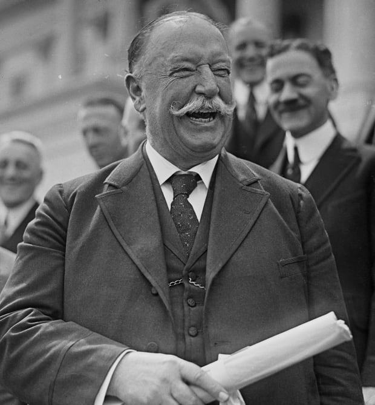

Life After Presidency

Taft laughing
After Presidency
Taft's Tombstone
Taft's Death
On March 8, 1930, Taft died from complications of heart disease,
high blood pressure, and inflammation of the bladder. His funeral
was the first presidential funeral broadcast on radio. He was buried
at Arlington National Cemetery.
After leaving office, Taft returned to Yale as a professor, continuing
his political activity and working against war through the League to
Enforce Peace. In 1921, President Warren G. Harding appointed Taft
chief justice, an office he had long sought.
Taft appointed a commission to investigate postal rates for newspapers
and magazines; its report helps to convince Congress that a recent
rate increase was justified.